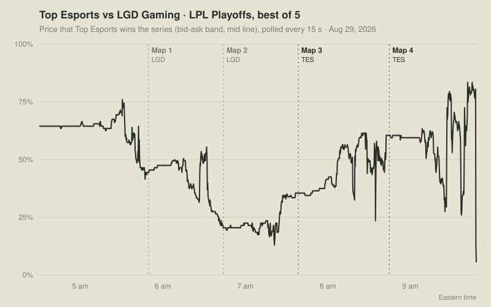

To study how prediction markets move during live events, I needed a clean record of their order books over time, collected without gaps and without blowing through the data vendor's API quota.
What I built
Five long-running services on a Linux VPS, managed by systemd, that wrote 11.7M rows to SQLite:
a recorder that discovers markets every 5 minutes and polls order books every 15 seconds during live windows,
a live-score detector,
close and drift trackers,
a monitor.

One series from the recorded data: Top Esports vs LGD Gaming, LPL Playoffs, Aug 29, 2026. 1,268 order-book snapshots at 15-second intervals. Dashed lines are map ends from the live-score detector, which logged maps 1-4. The final drop is the market pricing map 5. Drawn from the archived SQLite snapshot by tools/make_market_chart.py.
A bug worth telling
API usage spiked to about 500K tokens a day. I traced it to a change that kept re-fetching the vendor's full market catalog. The fix was a memoized catalog plus a 1-hour circuit breaker on rate-limit errors.